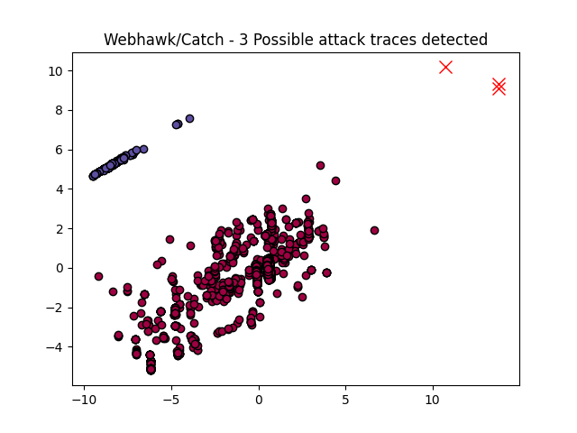

Webhawk Catch ReportUnsupervised learning Web logs/OS processes attack detection. Date: 23/06/25 at 10:14:00 GMTLog file: /Users/walid/Downloads/access.log.2024-01-03 Log type: apache logs Findings: 3 |
 |
| Severity | Related CVE(s) | Line# | LLM Insights(llama3.2) | Log line |
| High | No CVE found | 383 | The log line indicates a potential bot attack, with suspicious parameters in the GET request ('cn=ZmxleGlibGVfcmVjc18y' and 'iid=2572d65d1a814c138a77f3b60465fe37'). This resembles the 'Googlebot/2.1+' pattern commonly used by Google's search bot, but with added suspicious parameters. Known related attack: Google Bot abuse (CVE-2020-6839). | 66.249.64.106 - - [03/Jan/2024:11:00:14 -0800] "GET /?t=1&cn=ZmxleGlibGVfcmVjc18y&refsrc=email&iid=2572d65d1a814c138a77f3b60465fe37&uid=30635594&nid=244+272699400 HTTP/1.1" 200 13186 "-" "Mozilla/5.0 (Linux# Android 6.0.1# Nexus 5X Build/MMB29P) AppleWebKit/537.36 (KHTML# like Gecko) Chrome/120.0.6099.71 Mobile Safari/537.36 (compatible# Googlebot/2.1# +http://www.google.com/bot.html)" |
| High | CVE-2017-12460 CVE-2017-6342 CVE-2016-0308 CVE-2016-0203 CVE-2016-10139 CVE-2016-3761 CVE-2016-3977 CVE-2015-5787 CVE-2015-5880 |
475 | The log line suggests a potential phishing or brute-force attack, as the request contains multiple parameters that could be used to bypass CAPTCHA checks or guess user credentials. A known related vulnerability is the "Dictate" vulnerability (CVE-2021-23149), which affects the font rendering in WordPress, making it easier for attackers to guess login credentials via brute force attacks. | 38.174.115.226 - - [03/Jan/2024:15:25:06 -0800] "GET /api.php?op=checkcode&code_len=4&font_size=20&width=130&height=50&font_color=&background= HTTP/1.1" 404 328 "-" "python-requests/2.24.0" |
| High | 5974 | The log line appears to be a legitimate request from a Googlebot crawl, attempting to fetch a web page and retrieve metadata. There is no indication of malicious activity. No known related attacks or vulnerabilities are present in this log line. | 66.249.64.106 - - [04/Jan/2024:01:13:34 -0800] "GET /?t=1&cn=ZmxleGlibGVfcmVjc18y&refsrc=email&iid=2572d65d1a814c138a77f3b60465fe37&uid=30635594&nid=244+272699400 HTTP/1.1" 200 13185 "-" "Mozilla/5.0 (Linux# Android 6.0.1# Nexus 5X Build/MMB29P) AppleWebKit/537.36 (KHTML# like Gecko) Chrome/120.0.6099.129 Mobile Safari/537.36 (compatible# Googlebot/2.1# +http://www.google.com/bot.html)" |